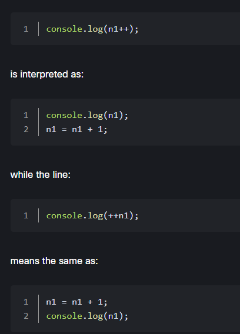
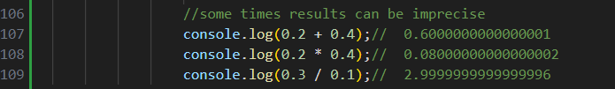

OPERATORS
Operators in programming languages are symbols (sometimes also names) that are used to perform certain actions on arguments called operands.
Operands can be both values and variables. We have encountered operators several times in previous examples, for example, the assignment symbol = or the keyword typeof.
Operators can be categorized in several ways. They are distinguished, for example, by the number of operands they work on.
The addition operator + is a typical binary operator (it uses two operands), while the typeof operator is unary (it uses only one operand).

In JavaScript, there is also one ternary operator (operating on three operands), about which we will say a few words in a moment.
We can differentiate between prefix operators (occurring before the operand), postfix operators (after the operand) and infix operators (between operands). However,
it’s common to categorize operators according to the context in which they are used: so we have assignment; arithmetic; logical; or conditional operators.
We will further review the basic JavaScript operators according to this classification.
1.ASSIGNMENT OPERATORS
Let's start with the assignment operators. In this group, there are operators that allow for the assigning of values to variables and constants.
The basic assignment operator is the equals sign "=", which we have already seen many times in the examples. This operator assigns the value of the right operand to the left operand.

2.ARITHMETIC OPERATORS
Arithmetic operators express mathematical operations, and they accept numerical values and variables. All arithmetic operators, except addition, will try to implicitly convert values to the Number type before performing the operation.
The addition operator will convert everything to a String if any of the operands is a String type, otherwise it will convert them to a Number like the rest of the arithmetic operators.
The order of the operations is respected in JavaScript like in math,
and we can use parentheses as in math to change the operation order if needed.
The basic binary arithmetic operators are the addition "+", subtraction "-", multiplication *, division "/", division remainder "%" and power "**".
Their operation is analogous to what we know from mathematics, and the easiest way to trace them is to use an example:check your JavaScript file :
3.UNARY ARITHMETIC OPERATORS
There are also several unary arithmetic operators (operating on a single operand). Among them there are the plus "+" and minus - operators.
Both operators convert operands to the Number type, while the minus operator additionally negates it.
4.UNARY INCREMENT AND DECREMENT OPERATORS
Among the arithmetic operators, we also have at our disposal the unary increment ++ and decrement - - operators, in both prefix and postfix versions.
They allow us to increase (increment) or decrease (decrement) the value of the operand by 1.
These operators in the postfix version (i.e. the operator is on the right side of the operand) performs the operation by changing the value of the variable, but returns the value before the change.
The prefix version of the operator (i.e. the operator is placed before the operand) performs the operation and returns the new value.

keep in mind that the Number type is a floating-point type, which means that the results of some of the operations may be imprecise.

These are artefacts of floating-point arithmetic. The number will be precise for integers up to 252, but fractions may not be as precise, as many fractions are impossible to directly represent in binary format.
We’ll discuss how to mitigate this in a moment when we introduce comparison operators.
5. COMPOUND ASSIGNMENT OPERATORS
Binary arithmetic operators can be combined with the assignment operator, resulting in the addition assignment +=, the subtraction assignment -=, the multiplication assignment *=, the division assignment /=, the remainder assignment %=, and the power assignment **=.
Each of these operators takes a value from the variable to which the assignment is to be made (the left operand) and modifies it by performing an arithmetic operation using the right operand value. The new value is assigned to the left operand.